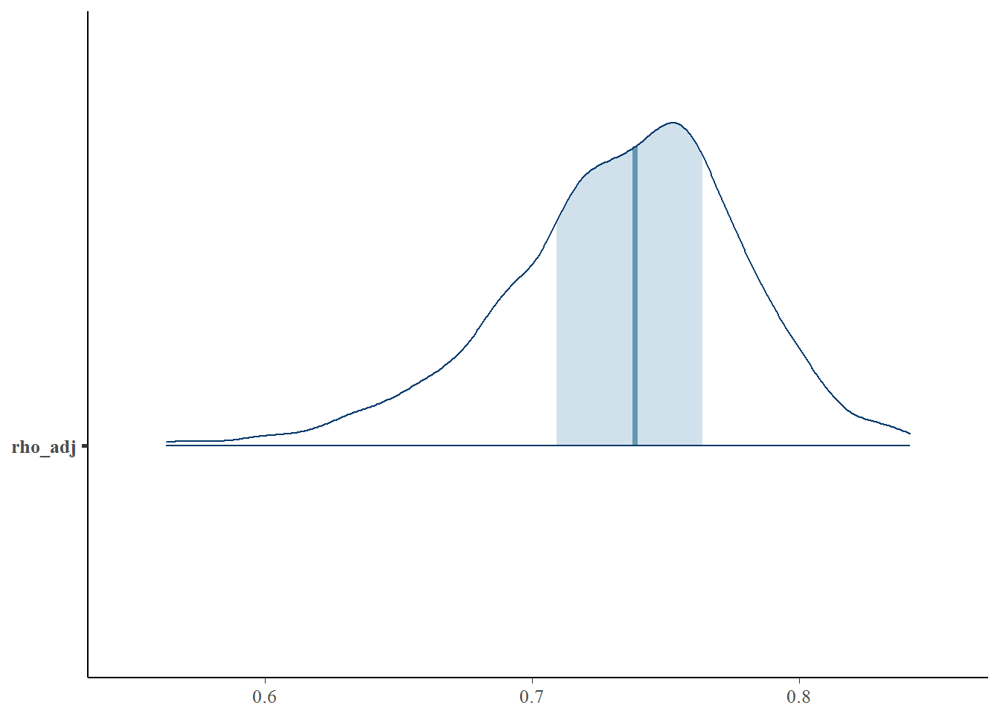

Often in environmental health datasets censored variables are adjusted by another non-censored variable. For example, measurements of two chemicals in a sample (\(x\) and \(y\)) might be normalized by dividing by the volume of each sample (\(z\)). If \(x\) and \(y\) were singly censored, dividing them by \(z\) leads to variables \(x_{adj}\) and \(y_{adj}\) that are censored at multiple points.
Newton and Rudel (2007) describe a method for estimating the Pearson correlation between two censored variables that are adjusted by a third, non-censored variable. The approach incorporates information about the correlations between \(x\), \(y\), and \(z\), and is based on the identity
\[ \mathrm{cor}(x-z,y-z) = \frac{\sigma_{xy} - \sigma_{xz} - \sigma_{yz} + \sigma_z^2}{\big\{(\sigma_x^2 + \sigma_z^2 -2 \sigma_{xz})(\sigma_y^2 + \sigma_z^2 -2\sigma_{yz})\big\}^{0.5}} \]
You can use this method in censcor by using the adj argument to input a formula describing the adjustment column. Note that we still the unadjusted values for \(x\) and \(y\).
d1 <- generate_censored_data(N = 100, # Number of data points
rho = 0.5, # true correlation between x and y
L_prob = 0.2, # probability of censoring
direction = -1, # direction of censoring (left)
adj = TRUE, # generate an adjustment variable
adj_sigma = 1) # standard deviation of the adjustment variable
fit <- censcor(x | cens(x_cens) ~ y | cens(y_cens), d1, adj = ~adj, iter = 600)The estimated correlation between \(x\) and \(y\) as adjusted by \(z\) (that is, the correlation between \(x-z\) and \(y-z\)) is reported as rho_adj. The theoretical value is
\[ \rho_{adj} = \frac{\rho_{xy} + \sigma_z}{1 + \sigma_z} \]
In this example, we set \(\rho_{xy}=0.5\) and \(\sigma_z=1\), so we expect \(\rho_{adj}\) to be \(0.75\).
fit## Inference for Stan model: censored_correlations_z.
## 4 chains, each with iter=600; warmup=300; thin=1;
## post-warmup draws per chain=300, total post-warmup draws=1200.
##
## mean se_mean sd 2.5% 25% 50% 75% 97.5% n_eff
## sigma_x 0.95 0.0 0.06 0.85 0.91 0.95 0.99 1.07 1200
## sigma_y 0.93 0.0 0.06 0.83 0.89 0.93 0.97 1.05 1200
## sigma_z 1.04 0.0 0.05 0.94 1.00 1.04 1.08 1.15 1200
## mu_x 0.10 0.0 0.07 -0.03 0.05 0.10 0.14 0.22 1200
## mu_y 0.07 0.0 0.07 -0.06 0.02 0.07 0.11 0.19 1200
## mu_z 0.03 0.0 0.07 -0.10 -0.02 0.03 0.08 0.18 1200
## rho_xy 0.40 0.0 0.08 0.23 0.35 0.41 0.46 0.55 1086
## rho_xz 0.04 0.0 0.10 -0.15 -0.02 0.04 0.11 0.22 1200
## rho_yz -0.06 0.0 0.10 -0.25 -0.13 -0.06 0.01 0.13 1200
## rho_adj 0.73 0.0 0.04 0.63 0.71 0.74 0.76 0.81 1200
## lp__ -801.47 0.1 2.14 -806.59 -802.59 -801.08 -799.95 -798.28 478
## Rhat
## sigma_x 1
## sigma_y 1
## sigma_z 1
## mu_x 1
## mu_y 1
## mu_z 1
## rho_xy 1
## rho_xz 1
## rho_yz 1
## rho_adj 1
## lp__ 1
##
## Samples were drawn using NUTS(diag_e) at Fri Nov 17 17:15:26 2017.
## For each parameter, n_eff is a crude measure of effective sample size,
## and Rhat is the potential scale reduction factor on split chains (at
## convergence, Rhat=1).library(bayesplot)## This is bayesplot version 1.2.0mcmc_areas(as.matrix(fit), pars = "rho_adj")